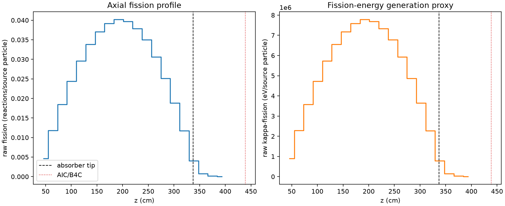
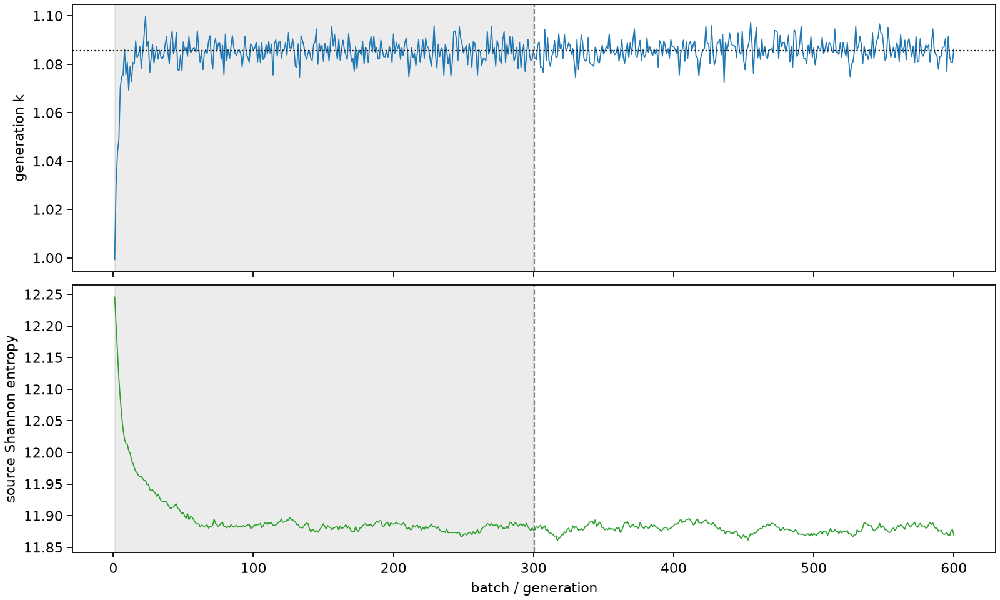

| field | value |
|---|---|
| experiment | V2-ADAPTIVE_01-0014 |
| k | 1.0857095821154845 |
| MC standard error | 0.00018172420451647976 |
| seconds | 1070.7227832460194 |
| acceptance | not_assessed |
| convergence | review_required |
Completed is output integrity only; physical and statistical review required. Zero tallies do not prove zero production or zero uncertainty.
| diagnostic | value |
|---|---|
| geometric fuel voxels | 5280 |
| zero fission tally voxels | 0 |
| low signal fuel voxels | 234 |
| low signal fission share | 6.026041304083069e-05 |
| low signal kappa share | 6.029102359875609e-05 |
| important fission share | 0.9500959183568183 |
| previous filter included | 5046 |
| duration estimate s | 1562.5173488400023 |
| actual minus estimate s | -491.79456559398295 |
| fission relative MC error | statistics |
|---|---|
| all_geometric_fuel | {"voxels": 5280, "positive_mean_voxels": 5280, "zero_mean_voxels": 0, "undefined_relative_error_voxels": 0, "median": 0.0095578562565828, "p95": 0.14117815875823075, "maximum": 0.4206349704530092} |
| low_signal | {"voxels": 234, "positive_mean_voxels": 234, "zero_mean_voxels": 0, "undefined_relative_error_voxels": 0, "median": 0.24100631090038455, "p95": 0.30861346480251634, "maximum": 0.4206349704530092} |
| important_95pct | {"voxels": 3674, "positive_mean_voxels": 3674, "zero_mean_voxels": 0, "undefined_relative_error_voxels": 0, "median": 0.008363291206549665, "p95": 0.013097997069825045, "maximum": 0.015119698322459551} |
| outside_previous_filter | {"voxels": 234, "positive_mean_voxels": 234, "zero_mean_voxels": 0, "undefined_relative_error_voxels": 0, "median": 0.24100631090038455, "p95": 0.30861346480251634, "maximum": 0.4206349704530092} |
| kappa_fission relative MC error | statistics |
|---|---|
| all_geometric_fuel | {"voxels": 5280, "positive_mean_voxels": 5280, "zero_mean_voxels": 0, "undefined_relative_error_voxels": 0, "median": 0.009545995861282014, "p95": 0.14101398558666892, "maximum": 0.41964732624603907} |
| low_signal | {"voxels": 234, "positive_mean_voxels": 234, "zero_mean_voxels": 0, "undefined_relative_error_voxels": 0, "median": 0.24062797402436956, "p95": 0.30797820399577563, "maximum": 0.41964732624603907} |
| important_95pct | {"voxels": 3674, "positive_mean_voxels": 3674, "zero_mean_voxels": 0, "undefined_relative_error_voxels": 0, "median": 0.008352219956484018, "p95": 0.013082533771436769, "maximum": 0.015100766868389915} |
| outside_previous_filter | {"voxels": 234, "positive_mean_voxels": 234, "zero_mean_voxels": 0, "undefined_relative_error_voxels": 0, "median": 0.24062797402436956, "p95": 0.30797820399577563, "maximum": 0.41964732624603907} |
| axial bin | fission share | kappa-fission share |
|---|---|---|
| 1 | 0.010525587194423132 | 0.01052612177092451 |
| 2 | 0.02664514549868795 | 0.02664528170745232 |
| 3 | 0.04167102982990615 | 0.041670955211170126 |
| 4 | 0.055141043828057054 | 0.0551409137559781 |
| 5 | 0.06672115824220935 | 0.0667210284456099 |
| 6 | 0.0763278927083548 | 0.07632747737989314 |
| 7 | 0.08370319906314767 | 0.08370304221889358 |
| 8 | 0.08844741423291405 | 0.08844711907014961 |
| 9 | 0.09068474032093893 | 0.09068422492227554 |
| 10 | 0.08967856142156207 | 0.08967812586793332 |
| 11 | 0.08554306590459135 | 0.08554276550892044 |
| 12 | 0.07897232666647445 | 0.07897194763853459 |
| 13 | 0.06912389214695844 | 0.06912379782886419 |
| 14 | 0.056640822162811466 | 0.05664066273134827 |
| 15 | 0.04244152968317312 | 0.042441451534452716 |
| 16 | 0.02653900281992752 | 0.02653910187920359 |
| 17 | 0.009132143354867867 | 0.009133510479218152 |
| 18 | 0.0016297947507795466 | 0.0016306080689737527 |
| 19 | 0.00036323360747178096 | 0.00036341300485353043 |
| 20 | 6.841656274326705e-05 | 6.845097535047126e-05 |
Histories include the inactive-to-active transition at batch 300. kappa-fission approximates fission energy production, not total heat deposition.

